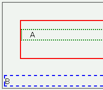
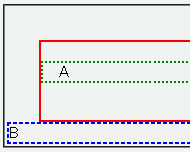

親要素内で、包含している最後のブロックレベル要素の直後にbr要素を置くと、親要素の縦方向マージンが指定値よりも少なく解釈される。
<div style="margin:2em; border:2px solid red;"> <p style="border:2px solid green;">A</p> <br> </div> <div style="border:2px solid blue;">B</div>
A
赤い実線ボーダーのdiv要素は四方に2文字分のマージンを設定しています。従って、上下左右のボーダーの周りに同じサイズの空間ができるはずです。
Moz1.0.1での表示（標準モード）
WinIE6.0での表示（標準モード）
WinIE6.0では標準・互換モードともに不具合の発生が確認されました。